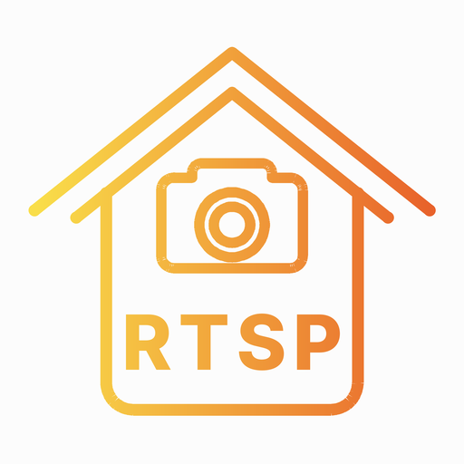

https://github.com/PardeepChahal7/RTSP-Viewer
Source code, new versions, questions and bug reports. Scan the code to open it.
Pardeep · MIT license: free to use, change and share.
Enter the camera's local IP and login. Use the remote's arrow keys to move, OK to edit. RETURN goes back without saving.